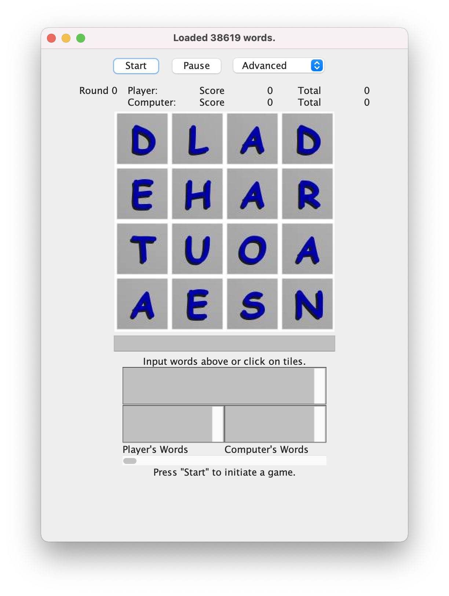

Joggle! The insanely addictive word game that is more popular than the Klez virus! Featured on Bonus.com the "SuperSite for Kids", listed on GameJUG Arcade Page, the The WordGames Programmers Guide, HughesClan, JARS, and jRoundup. Given two whole stars by GamesDomain.com!
The goal of the game is to find as many words as possible, or at least more than the computer does. Words may be formed from adjacent tiles in any direction, and must contain at least three letters. The same tile cannot be repeated within a word (but the same letter on a different tile is okay).
To begin game play, click the board or press "Start." Input words in the text field below the letters. Words may be seperated by spaces or commas. You may also input words by clicking on tiles (double clicking to terminate a word). After 180 seconds, matching words between the player and computer will be eliminated. To start a new round, press "Start" again. Games ends whenever you feel like it.
I wrote this mainly as a programming exercise to learn Java threads, but also as a trainer to become a better joggle player (I was addicted for a while). At the heart of the code is a simple, fast recursion algorithm (see the class JoggleBoard). Certainly that could have been more cleanly designed (I wrote it between midnight and 2 am on a Saturday night), but it works well. Dictionary lookups are done with a fast binary search algorithm, and cached in a Hashtable (see the CachingWordList class). It does take a meg or two of memory and a small bit of load time to make a Vector out of the WordList (a random-access data structure would be a better choice), but it seems to work well. The object design is pretty clean, with a healthy use of inheritance, and using the Observer-Observable to do a simple game event model. It took two days to write all the classes, get everything working, and about another two days of bug fixing.